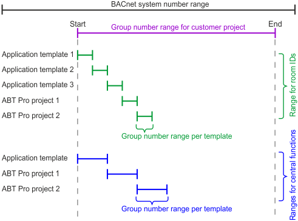

Setting group number ranges
You can set default group number ranges for room IDs and central functions in Settings > Number ranges > Range settings.
Number ranges
Room IDs and central function numbers must be unique within your customer project and within the BACnet system which can contain more than one customer project. Plan your project accordingly.

Group number range
You can set the group number range for your customer project in Settings > Number ranges > Range settings.
Number ranges
Group numbers for room IDs
- You can set room ID ranges for each application template when creating application templates.
Adding project-specific application templates - You can change room ID ranges for each application template when changing application templates, and you can change room IDs in the room details.
Modifying template properties
Room and segment details
Group numbers for central functions
You can change group numbers of central functions in Building > Central functions, in the central functions table.
Central functions